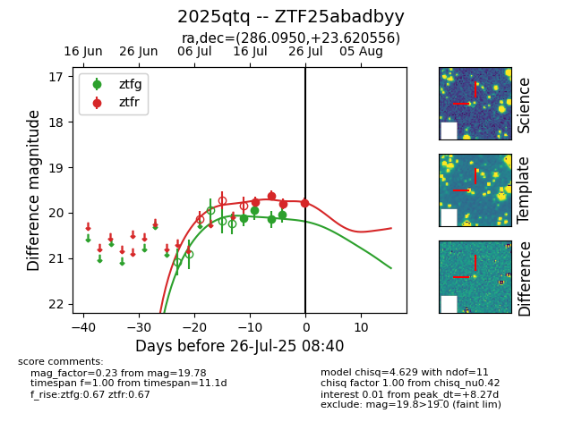

Target 2025qtq at 2025-07-26 08:40, see:
FINK: fink-portal.org/2025qtq
Lasair: lasair-ztf.lsst.ac.uk/objects/2025qtq
ALeRCE: alerce.online/object/2025qtq
TNS: wis-tns.org/object/2025qtq
YSE: ziggy.ucolick.org/yse/transient_detail/2025qtq
alt names
ZTF25abadbyy (ztf,fink)
2025qtq (tns,yse)
coordinates:
equatorial (ra, dec) = (286.0950,+23.62056)
galactic (l, b) = (55.4999,+7.85576)
photometry
last ztfg=20.05, ztfr=19.78
4 ztfg, 4 ztfr detections
